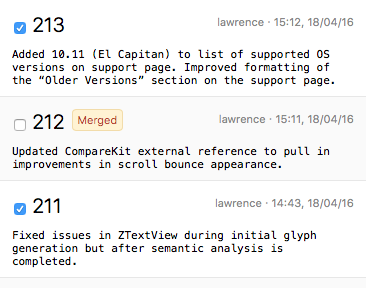

. The revision picker also indicates which revisions have already been merged:
. The revision picker also indicates which revisions have already been merged:Cherry picking is appropriate when individual change sets (i.e. revisions) need to be copied from one branch to another.
For example, small, localized changes such as bug fixes can be 'cherry picked' from the main trunk of development and individually merged into a maintenance branch for release in a maintenance update.
This contrasts with synchronization merging, which synchronizes a branch with its ancestor by merging all changes made to date.
To merge cherry picked changes:
Click the Cherry Pick Changes button:
Verify that the selected working copy does not contain any uncommitted modifications.
Merging into a working copy which contains uncommitted modifications can result in unnecessary conflicts and is not recommended.
Cornerstone will display a warning in the Working Copy Checklist if modifications are detected. If necessary, click the Revert... or Commit... button as required.
Verify that the selected working copy is up-to-date.
Merging into a working copy which is not up-to-date can result in unnecessary conflicts and is not recommended.
Cornerstone will display a warning in the Working Copy Checklist if the working is not up-to-date. If necessary, click the Update to Latest Revision button to bring the working copy up to date.
Specify the branch to merge from in the Merge from field.
Specify the revisions to merge in the Revisions field provided.
See Selecting Revisions below for more information.
If required, change the merge options by clicking on the Options popup button.
Cornerstone will display a preview of the changes to be merged.
Click the Merge Changes button to merge the changes into the working copy.
Changes made in the branch are merged into the selected working copy.
Verify the changes and resolve any conflicts.
Commit the changes to the repository to complete the merge operation.
The Revisions field accepts both single revisions (e.g. ”141“) and ranges. Ranges should be entered in the form start-end, e.g. “144-149”.
Individual revisions and ranges can be combined, such as “141, 144-149, 153”. Revisions and ranges should be separated by commas.
Revisions and ranges can also be selected by opening the picker by clicking the picker button . The revision picker also indicates which revisions have already been merged:
